Вазы с выразительной фактурой
Округлые и вытянутые формы, широкие и узкие горловины — рассмотрите предметы на исходной фотографии.
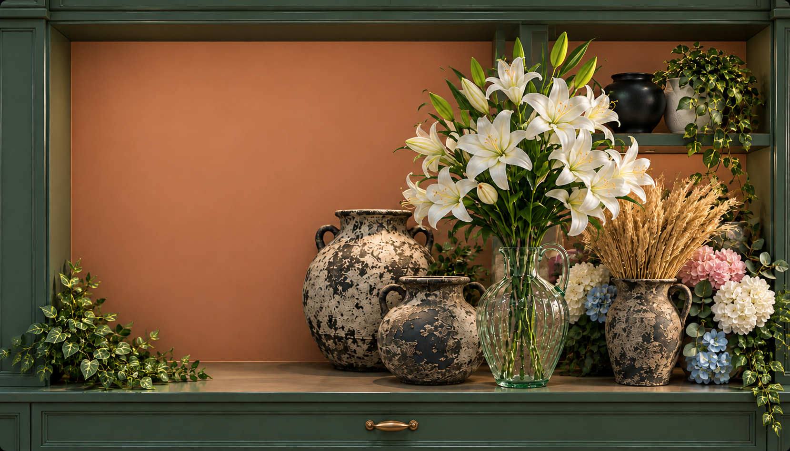
Вазы, искусственные цветы
и декор для вашего дома.
Ваза может стать самостоятельным акцентом. Или задать силуэт цветочной композиции.
Смотреть вазы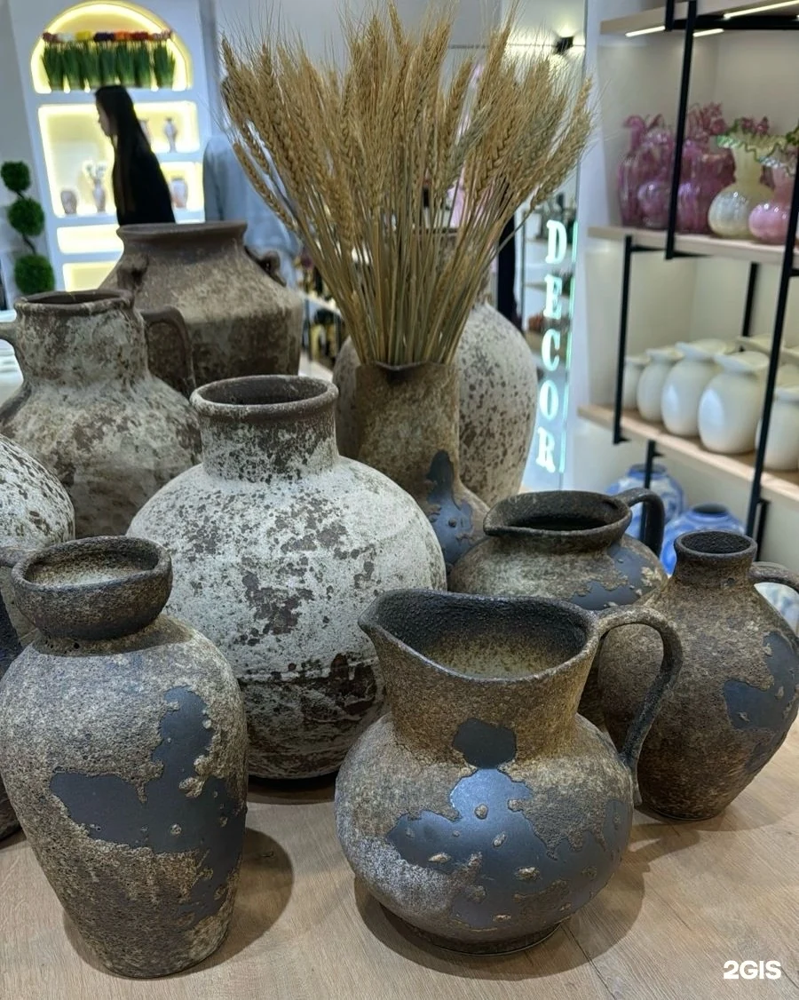
Горловина, объём и ручки меняют характер предмета. Рассмотрите оригинал, прежде чем выбрать.
Высоту и диаметр, материал, вес и возможность использовать вазу с водой. По фотографии эти свойства определить нельзя.
Белые лилии и цветочные элементы разных оттенков: начните с близкой вам палитры, затем уточните конкретный состав.
Смотреть цветы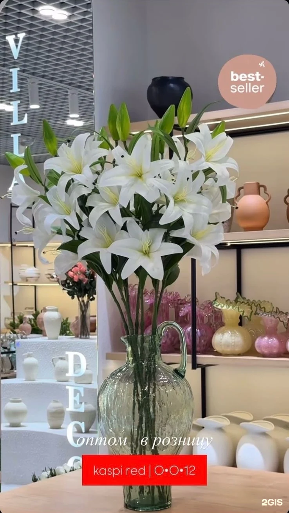
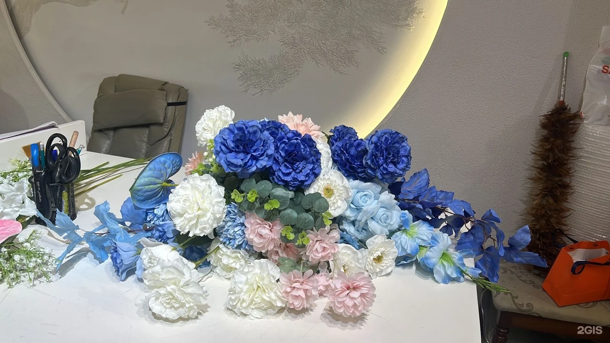
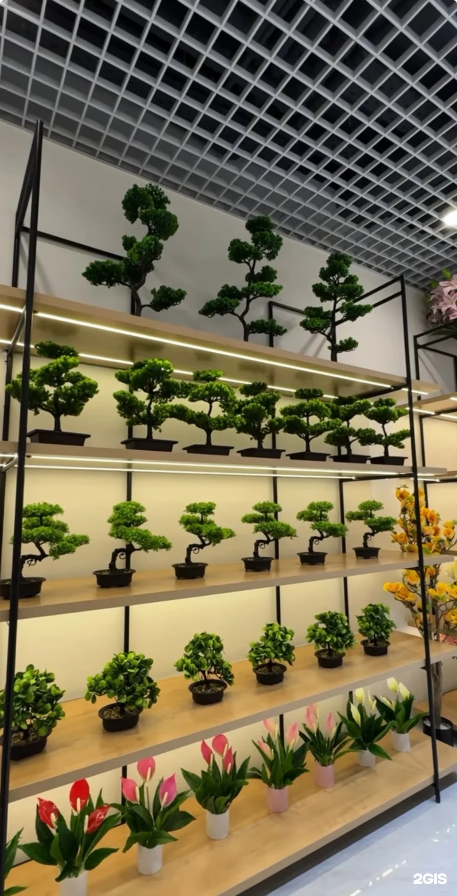
Декоративное дерево можно выбирать как предмет: по высоте, форме кроны и тому, сколько пространства оно занимает.
В фотографиях магазина есть ёлка и сезонные украшения. Цвет и масштаб можно начать обсуждать сейчас — доступную коллекцию уточнить перед покупкой.
Сезонный ассортимент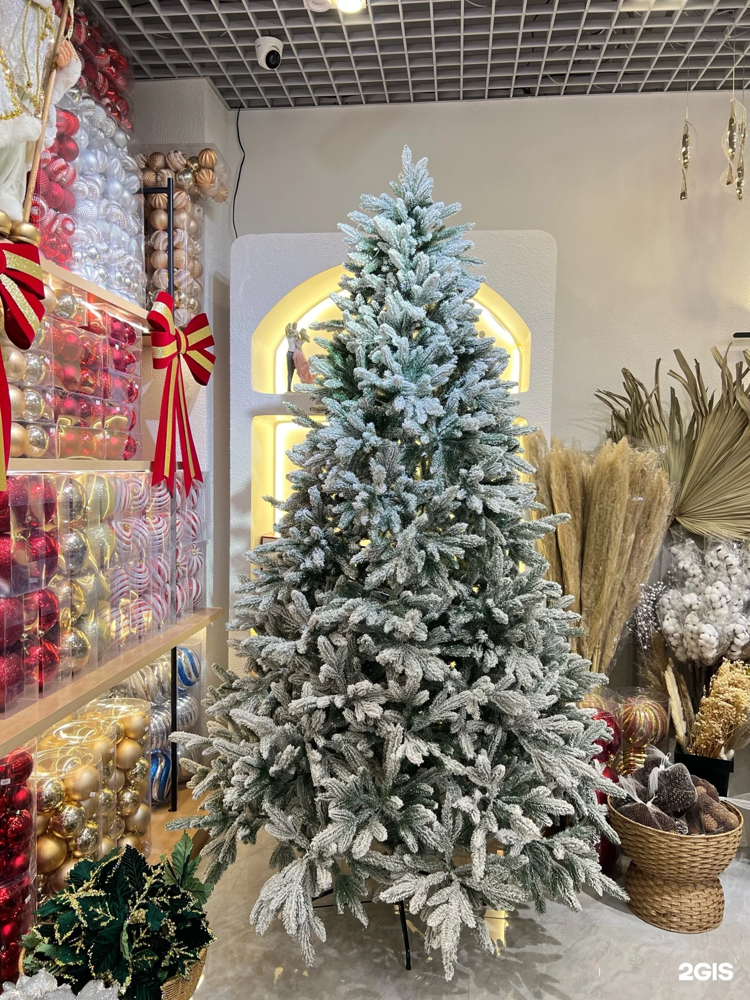
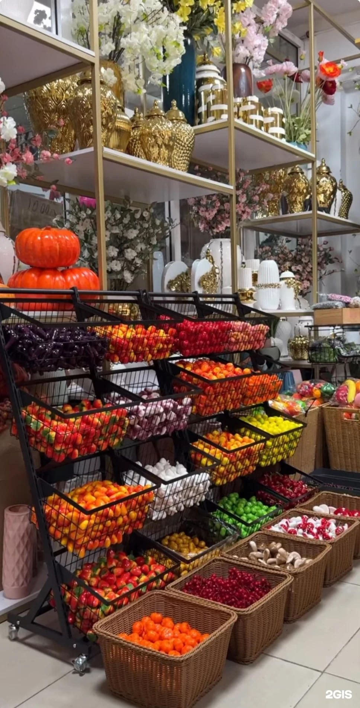
Подборки по реальным фотографиям ассортимента. Сохраните интересующее и уточните у магазина модели, размеры, стоимость и наличие.
8 подборок
Округлые и вытянутые формы, широкие и узкие горловины — рассмотрите предметы на исходной фотографии.
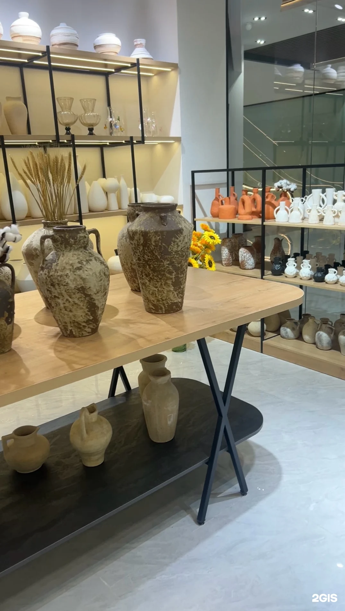
Разные силуэты и оттенки в одной подборке. Уточните, какие модели доступны сейчас.
Высокие стебли, белые лепестки и зелёные бутоны. Фото помогает обсудить нужный силуэт и оттенок.
Синие, голубые, белые и розовые элементы на рабочем столе. Конкретный состав и стоимость уточните в магазине.
Компактные деревья на полках. Для выбора нужны высота, диаметр кроны и место установки.
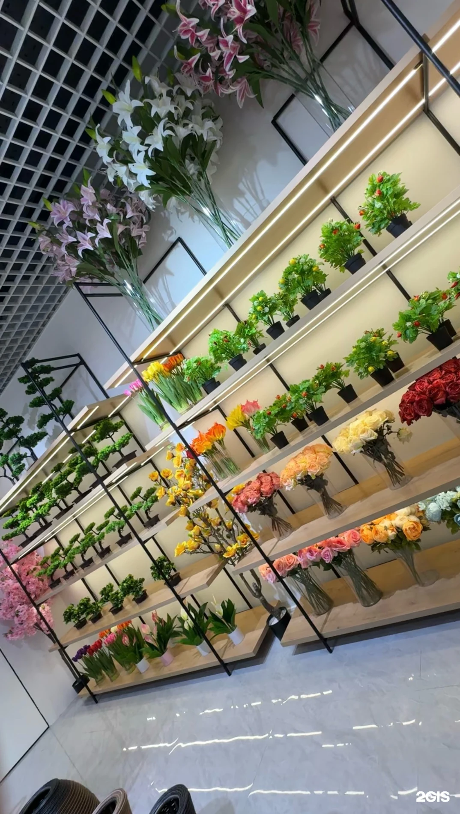
Растения и зелёные акценты в витрине. Попросите актуальное фото интересующего варианта.
Сезонный ассортимент на фотографии магазина. Текущие модели и размеры уточняются отдельно.
Цветовые акценты и декоративные элементы на полках. Перед покупкой уточните доступную коллекцию.
Таких подборок пока нет. Попробуйте другое слово или вернитесь ко всем.
Представьте, где будет стоять декор. Эти пожелания можно добавить к своему подбору.
Уточните размер основания и общую высоту. Композиция не должна мешать сервировке и общению.
Полезно подготовить: фото места, ширину поверхности, допустимую высоту и желаемые оттенки.
Добавить пожелания к подборуНа фотографиях — магазин и его ассортимент. Перед поездкой уточните, где сейчас можно посмотреть выбранные предметы, точный адрес филиала и график.
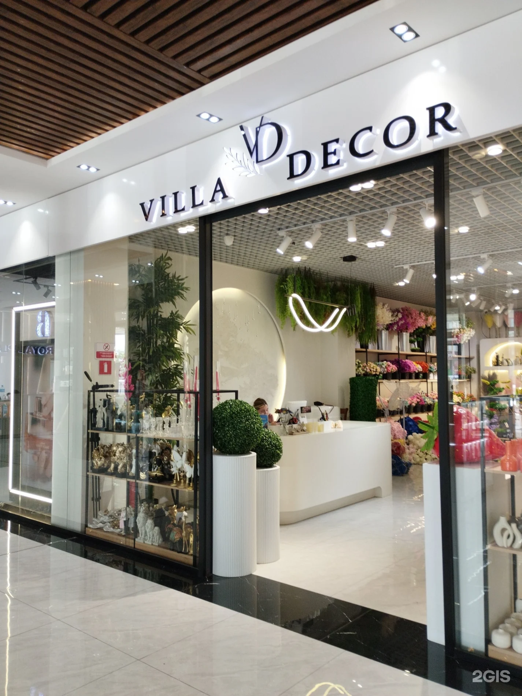
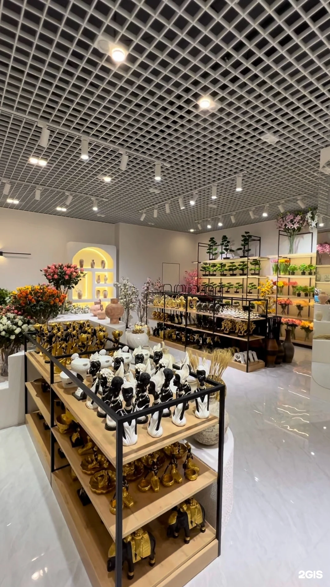
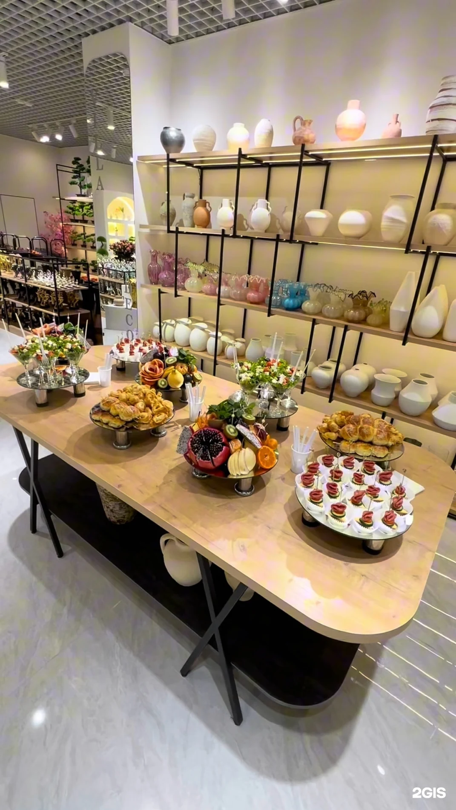
Ваши фотографии, количество и пожелания — один запрос магазину. Актуальные модели, размеры, стоимость и наличие уточняются лично.
Здесь появятся выбранные подборки. Нажмите «В подбор» рядом с интересующей фотографией.
Для нескольких предметов или оптового запроса укажите нужное количество и уточните условия в магазине.
Подготовьте текст и отправьте его в Instagram.
Перед визитом уточните выбранный филиал, адрес и график.
Карточка магазина на карте ↗